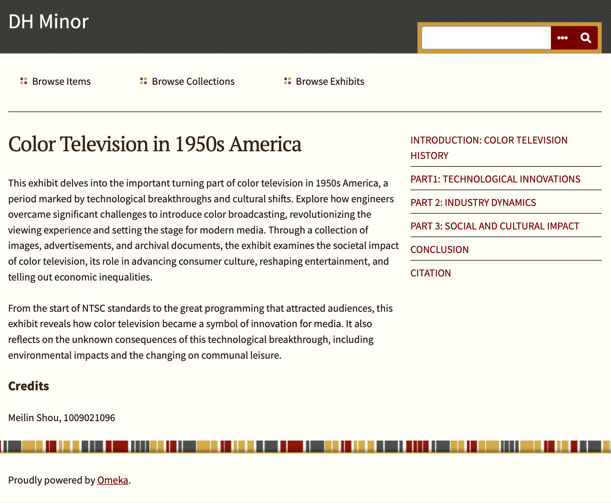

Hello! My name is Meilin Shou. I am a 4th year student at the University of Toronto, studing Mathematics and Book & Media Studies double major.
I love intersection of design, technology, and education, building better interfaces, analyzing behavior data, and creating content that supports learning. With a background in media and math, plus hands-on experience in design, web development, and video editing, I’m eager to keep exploring how research-driven design can make systems more human-centered and effective.
Sept 2022 — May 2026
Relevant coursework includes:
Mathematics Major: Calculus I–II, Linear Algebra I–II, Multivariable Calculus, Ordinary Differential Equations,
Complex Variables, Linear Programming, Combinatorics, Groups & Symmetry;
BMS Major: Book & Media Studies, Digital Humanities, Media Identities, Social Research Methods,
Social Media & Digital Platforms
I also contributed to the UofT Chinese Volunteer Association as a video editor in the Design Department.
Sept 2024 — Present
Designed and launched a student-centered website aggregating UofT course details and syllabus, improving accessibility and efficiency in course planning. (part of the BMS316 course (not required in the assignment scope))
View UofTips
Learn More
Developed an interactive digital exhibition using Omeka as part of the DHU235 course, conducting primary source research to curate a collection of 1950s American media and analyze its societal impact.
View Project
Conducted UX evaluation of Baidu Translate features, producing actionable insights and earning recognition as a "Top Product Experience Officer".
View Reward
Contact me:
meilin.shou@mail.utoronto.ca

{kind=link}